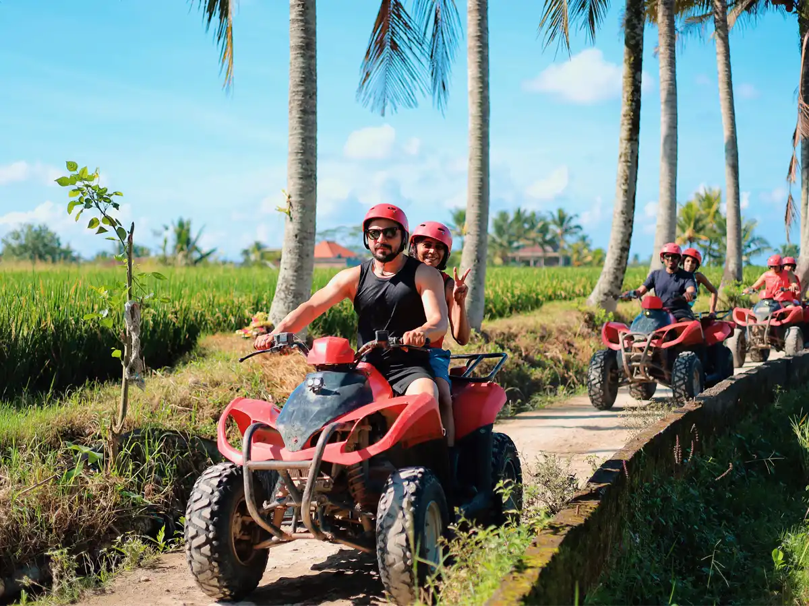
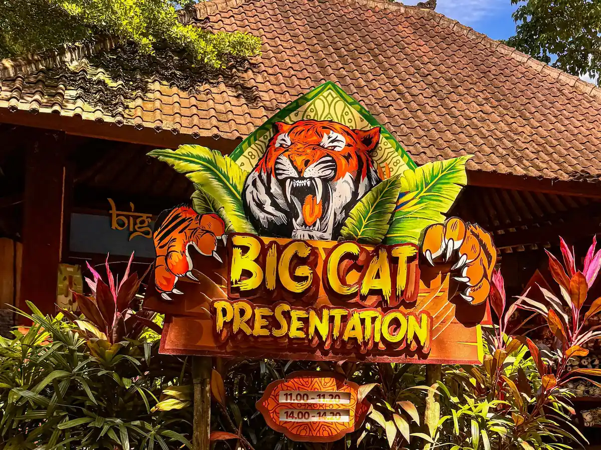
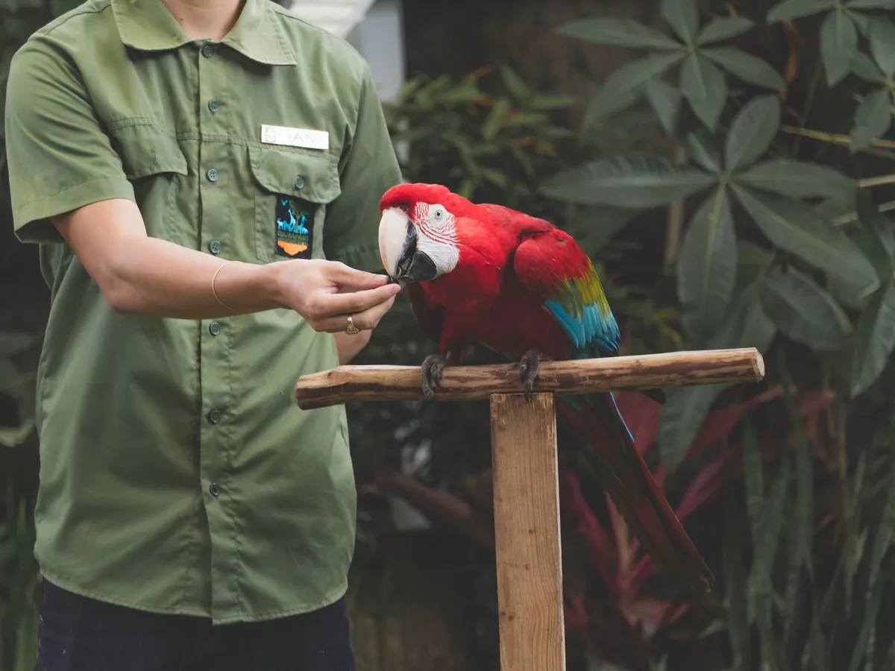

What You'll Do

ATV Quad Bike Ride
The main event - roughly an hour on an ATV through jungle trails, muddy tracks, rice paddies, and shallow river crossings, with a guide leading the way. Ride solo or tandem; a full safety briefing and gear are included. Expect to get wonderfully muddy.

Bali Zoo
Just south of Ubud, wander shaded jungle grounds past elephants, orangutans, sun bears, and hundreds of tropical animals. Optional feeding sessions and encounters are on offer, and it's compact enough for a relaxed visit - a big hit with kids.

Bali Bird Park
Right nearby, stroll walk-in aviaries home to more than 1,000 birds - from rare Bali starlings to giant hornbills - with free-flight shows overhead. Colourful, shady, and easy-going, it pairs naturally with the zoo.

Tegenungan Waterfall
A wide, powerful waterfall in the jungle just outside Ubud, with a natural pool at its base for a cooling swim when the water is calm. A short walk down, and a refreshing way to end the day.